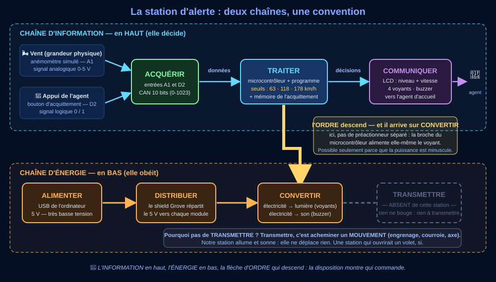

📞 Séance 1 — « La mairie vous appelle » : du besoin à l'algorithme
Question directrice : que doit décider le programme, à partir de quoi, et dans quel ordre ?
Relire le cahier des charges — et poser les deux chaînes
⏱ ~30 min
a) Le courrier, ligne à ligne
b) Chaque organe à sa place
c) La nouveauté
🪜 Version étayée — des phrases à compléter
Le niveau attendu est exactement le même qu'avec la consigne libre : ces débuts de phrases retirent l'obstacle de la rédaction, pas l'exigence scientifique. Recopie-les et complète chaque « ____ ».
- Le bouton fait entrer l'information « ____ », produite par ____.
- L'anémomètre, lui, capte une grandeur ____ ; le bouton capte une décision ____.
- C'est ce dialogue machine → humain → machine qu'on appelle ____.
💡 Aide de niveau 1
Comportement = « QUE fait la station ? » ; performance = « à quelle VITESSE, avec quelle précision ? ». Pour b) : cet organe capte-t-il, décide-t-il, diffuse-t-il, ou fournit-il seulement de l'énergie ?
💡💡 Aide de niveau 2
Le bouton est du côté « Acquérir » : il fait ENTRER une information (l'appui) exactement comme l'anémomètre fait entrer le vent. La différence est la SOURCE : l'anémomètre capte le monde physique, le bouton capte une décision humaine. Le LCD, la DEL et le buzzer font SORTIR l'information : « Communiquer ».
✅ Correction complète (à ouvrir après vérification)
a) « moins d'une seconde » → performance · « acquitter d'un appui » → comportement · 100 et 150 km/h → le cahier des charges de la mairie (jamais le hasard : en séance 4, la recette vérifiera CES valeurs-là).
b) potentiomètre → Acquérir · bouton → Acquérir · microcontrôleur → Traiter · LCD → Communiquer · DEL + buzzer → Communiquer · USB → Alimenter.
c) Justification attendue : le bouton fait entrer l'information « l'agent a pris connaissance de l'alarme », produite par un humain. L'anémomètre capte une grandeur physique (le vent) sans intervention humaine ; le bouton capte une décision humaine. Ce dialogue — la machine alerte, l'humain répond, la machine en tient compte — est l'interaction humain-machine exigée par le programme (3e_C9.2).
Recopie les deux chaînes dans ton cahier en respectant cette disposition : c'est elle qu'on te demandera au DNB.
Limite : le bouton pourrait aussi être vu comme une « commande » plutôt qu'un capteur — en 3e, on retient qu'il fait ENTRER une information, donc Acquérir.
De l'algorithme en français à l'algorigramme
⏱ ~35 mina) L'algorithme en français
RÉPÉTER sans fin :
lire la vitesse du vent
SI vitesse ≥ ALORS niveau ← alerte rouge
SINON SI vitesse ≥ ALORS niveau ← vigilance orange
SINON niveau ←
afficher le niveau et la vitesse
b) Lire l'algorigramme

💡 Aide de niveau 1
Les deux seuils sont écrits noir sur blanc dans le courrier de la mairie. Pour b) : suis le chemin avec le doigt, losange par losange, en répondant OUI ou NON à chaque question.
💡💡 Aide de niveau 2
130 ≥ 150 ? NON → on descend au 2e losange. 130 ≥ 100 ? OUI → vigilance. Maintenant imagine 180 km/h avec les losanges INVERSÉS (100 testé d'abord) : 180 ≥ 100 ? OUI → « vigilance »… et le test 150 n'est jamais atteint. Voilà pourquoi l'ordre compte.
✅ Correction complète
a) SI vitesse ≥ 150 → alerte rouge ; SINON SI vitesse ≥ 100 → vigilance orange ; SINON → veille.
b) 130 km/h → losange 150 : NON → losange 100 : OUI → vigilance orange. On teste 150 d'abord car une rafale à 180 doit finir en alerte : si on testait 100 d'abord, 180 ≥ 100 serait vrai et le programme s'arrêterait à « vigilance » — un bug dangereux. La flèche qui remonte est la boucle : une station de surveillance ne s'arrête jamais. Le losange est une décision à deux sorties OUI/NON.
Méthode : élaborer l'algorithme AVANT de programmer, c'est décider des variables, des seuils et de l'ordre des tests en français — quand corriger ne coûte encore rien.
Exemple pour s'en souvenir : un videur vérifie d'abord la carte VIP, puis l'entrée normale : s'il vérifiait l'entrée normale d'abord, les VIP feraient la queue avec tout le monde.
Limite : notre algorithme relit le vent 5 fois par seconde — un vrai anémomètre lisse la mesure sur plusieurs secondes pour éviter qu'une rafale isolée fasse clignoter l'alerte.
🎓 Encart DNB — l'algorigramme est un grand classique de l'épreuve
À l'épreuve de sciences du DNB, on te demandera de lire, compléter ou corriger un algorigramme : entrées/sorties, traitements, losanges de décision, boucles. Les gestes travaillés ici (suivre le chemin, vérifier l'ordre des tests, repérer la boucle) sont exactement ceux des sujets. Entraînement complet : les questions illustrées du QCM de cette séquence, puis l'entraînement DNB du dépôt (dossier 3e_C6.2).